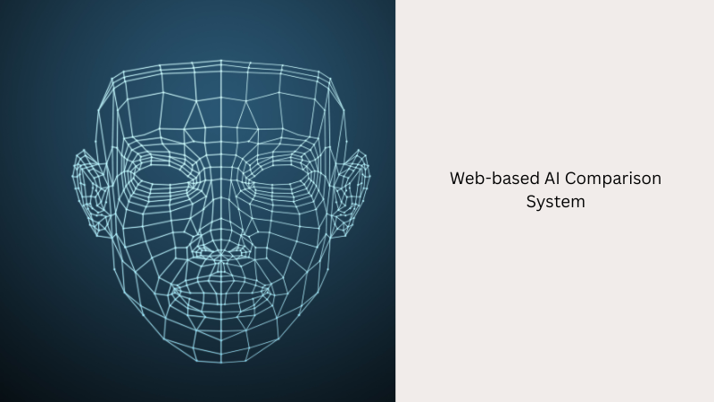
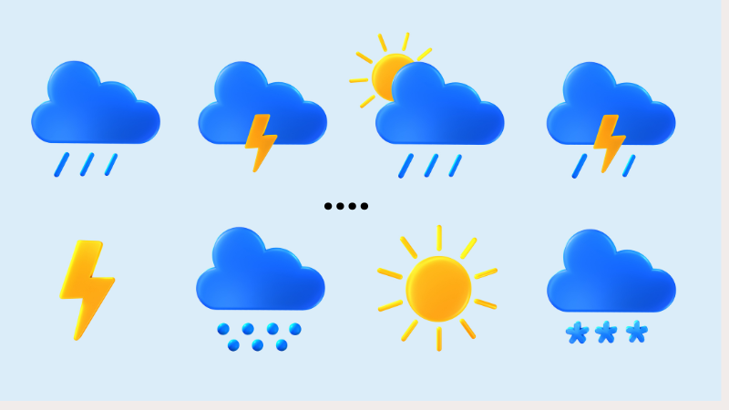
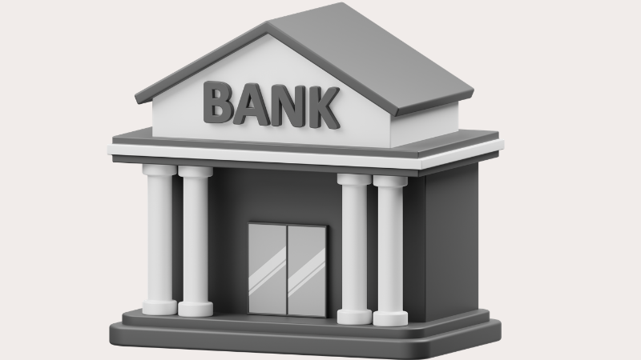

My Projects
A deeper dive into the tools I build, the problems I solve, and the technologies I use.
NextStepGermany
An AI-driven university recommendation system inspired by DAAD, helping students find suitable study programs in Germany based on their academic profile.

Face Recognition Models
Face recognition system comparing Teachable Machine (Deep Learning) vs KNN (ML). Includes a Flask web app with webcam & image upload capabilities.

Weather App (CLI)
A command-line Weather Application built with Java, utilizing HttpClient for API integration and Gson for JSON parsing.
Chess Game (GUI)
A beautiful, fully-functional Graphical User Interface Chess Game built entirely in Java using Swing/AWT libraries.

Banking System (Java & MySQL)
A comprehensive banking application allowing users to sign up, log in securely, and perform transactions with a MySQL database.